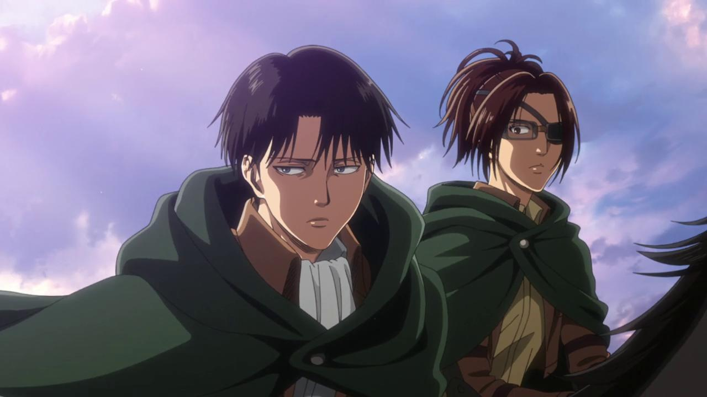

About Levi
Levi is badass! He is humanity's strongest soldier and unlike what he looks like he treasures his comrades.
Levi and his comrade
Levi's characteristics
- He is short and handsome
- He is kind and has a big heart
- He his very strong and smart
Levis's comrades
Levi treasures his comrades and respects them a lot, he is espicially close to Erwin and Zoe. Likewise Erwin and Zoe trust Levi and care for him. Click on the links below to read more about them: